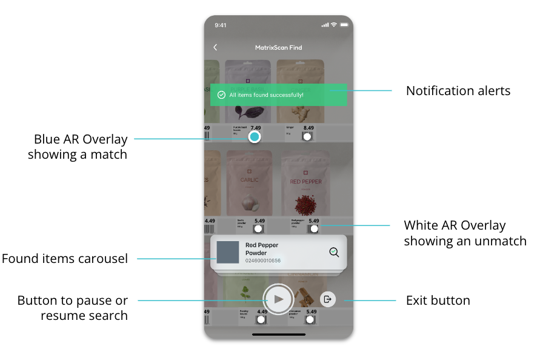

AR-Assisted Search And Find
Get Started With MatrixScan Find
What is MatrixScan Find?
MatrixScan Find is a pre-built UI that uses augmented reality overlays to highlight items that match predefined criteria. Whereas MatrixScan AR is fully customizable, MatrixScan Find is a pre-built solution that allows you to add a search and find experience with augmented reality to an existing native app, with just a few lines of code.
UI Overview
MatrixScan Find is inspired by the familiar paradigm of a camera, including a shutter button that the user operates in order to control search.
It highlights items with obvious and colorful visual dots on screen.
When paused, MatrixScan Find showcases a carousel showing all the items that are currently being searched for, with a check mark showing those that have been found.
When in active search mode, the carousel is hidden to free up more screen space for tracking items.
The Quick Start Guide takes you through the process to install the full UI. However, you can then customize it by choosing to remove any elements on the screen except for the AR overlays. This allows you to create custom UIs suitable for your own workflows.
MatrixScan Find is implemented through functionality provided by BarcodeFind.
Requirements
The Scandit Data Capture SDK. Check out this guide.
A valid Scandit Data Capture SDK license key including MatrixScan AR add-on. You can sign up for a free test account at ssl.scandit.com.
Supported Devices
Runs on iOS and Android devices. Contact support for more details.
Supported Symbologies
MatrixScan Find supports all symbologies except DotCode, MaxiCode and postal codes (KIX, RM4SCC).
Quick Start Guide
MatrixScan Find is composed of two elements:
Barcode Find: a data capture mode that implements search and find functionality.
Barcode Find View: a pre-built UI that uses the mode to highlight found items.
In this guide you will learn step by step how to add Barcode Find and Barcode Find View to your application.
The steps are:
Create a new Data Capture Context instance.
Configure the Barcode Find Mode.
Setup the BarcodeFindView.
Register a listener to be notified with found items
Start searching
1. Create a new Data Capture Context instance
The first step to add find capabilities to your application is to create a new DataCaptureContext. The context expects a valid Scandit Data Capture SDK license key during construction.
DataCaptureContext dataCaptureContext = DataCaptureContext.forLicenseKey("-- ENTER YOUR SCANDIT LICENSE KEY HERE --");
2. Configure the Barcode Find Mode
The main entry point for the Barcode Find Mode is the BarcodeFind object. You can configure the supported Symbologies through its BarcodeFindSettings, and set up the list of items that you want MatrixScan Find to highlight (e.g. a list of products).
For this tutorial, we will set up Barcode Find for tracking EAN13 codes. Change this to the correct symbologies for your use case (e.g. Code 128, Code 39…).
First create the settings:
BarcodeFindSettings settings = new BarcodeFindSettings();
settings.setSymbologyEnabled(Symbology.EAN13_UPCA, true);
Then you have to create the list of items that will be actively searched for.
In this tutorial, let’s look up two items based on their EAN13 codes. We will attach to the first item some optional information that can be used by the BarcodeFindView to display extra information.
Set<BarcodeFindItem> items = new HashSet<>();
items.add(
new BarcodeFindItem(
new BarcodeFindItemSearchOptions("9783598215438"),
new BarcodeFindItemContent("Mini Screwdriver Set", "(6-Piece)", null)
)
);
items.add(
new BarcodeFindItem(
new BarcodeFindItemSearchOptions("9783598215414"),
null // Item information is optional, used for display only
)
);
Create the mode with the previously created settings and set the items:
BarcodeFind mode = new BarcodeFind(settings);
mode.setItemList(items);
3. Setup the BarcodeFindView
MatrixScan Find’s built-in AR user interface includes buttons and overlays that guide the user through the searching process. By adding a BarcodeFindView, the scanning interface (camera preview and searching UI elements) will be added automatically to your application.
The BarcodeFindView appearance can be customized through BarcodeFindViewSettings:
Colors of dots in augmented reality overlay
Enable sound and haptic alerts
BarcodeFindViewSettings viewSettings = new BarcodeFindViewSettings();
Construct a new BarcodeFindView. The BarcodeFindView is automatically added to the provided parent view.
(The parent view can be any subclass of ViewGroup, such as FrameLayout, …)
BarcodeFindView barcodeFindView = BarcodeFindView.newInstance(parentView, dataCaptureContext, mode, viewSettings);
Connect the BarcodeFindView to the Android lifecycle. The view is dependent on calling BarcodeFindView.onPause() and BarcodeFindView.onResume() to set up the camera and its overlays properly.
@Override
public void onResume() {
super.onResume();
barcodeFindView.onResume();
}
@Override
public void onPause() {
super.onPause();
barcodeFindView.onPause();
}
4. Register a listener to be notified with found items
The BarcodeFindView displays next to its shutter button a handy “finish” button. Register a BarcodeFindViewUiListener to be notified what items have been found once the finish button is pressed.
In this tutorial, we will then navigate back to the previous screen to finish the find session.
barcodeFindView.setListener(new BarcodeFindViewUiListener() {
@Override
public void onFinishButtonTapped(@NonNull Set<BarcodeFindItem> foundItems) {
requireActivity().onBackPressed();
}
});
5. Start searching
As soon as everything is set up, control the BarcodeFindView to start the search.
barcodeFindView.startSearching();
This is the equivalent of pressing the “Play” button programmatically. It will start the search process, turn on the camera and hide the item carousel.
Samples
The best way to start working with the Scandit Data Capture SDK is to run one of our sample apps. See the full list of available samples.
Advanced Settings
Set up a listener on the BarcodeFind mode
You may want more fine-grained knowledge over the different events happening during the life of the BarcodeFind mode, such as when the search starts, pauses and stops. To do this, you can directly register a BarcodeFindListener on the mode itself.
Be aware that these listeners will be called from a background thread.
mode.addListener(new BarcodeFindListener() {
@Override
public void onSearchPaused(@NonNull Set<BarcodeFindItem> foundItems) {
// The mode was paused
}
@Override
public void onSearchStarted() {
// The mode was started
}
@Override
public void onSearchStopped(@NonNull Set<BarcodeFindItem> foundItems) {
// The mode was stopped after the finish button was clicked
}
});
Set up a transformation
Sometimes, the barcode data needs to be transformed. For example, if the barcode contains the product identifier and other information, when a product is scanned, the barcode data is first parsed (via a transformation) and then the input list is checked.
First implement the BarcodeFindTransformer interface. For example, if you want to only consider the first 5 characters:
class Transformer implements BarcodeFindTransformer {
@Override
public String transformBarcodeData(String data) {
return data.substring(0, 5);
}
}
Then the tranformer needs to be set so it can be used by Barcode Find:
barcodeFind.setBarcodeTransformer(new Transformer())
UI configuration
The BarcodeFindView will by default show a set of UI elements, which can be optionally hidden:
A play/pause button
A finish button
A searched items carousel
Guidance hints
There is also a progress bar but this is hidden by default.
Each of these elements can be shown or hidden at will.
barcodeFindView.setShouldShowCarousel(false);
barcodeFindView.setShouldShowProgressBar(true);
// …